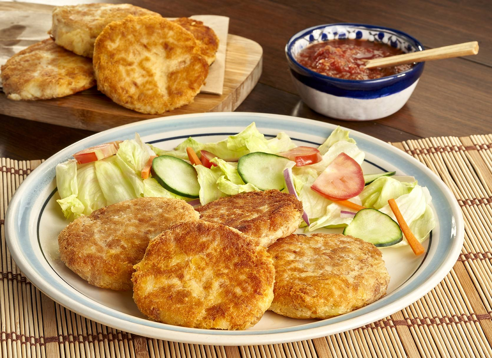

Tortitas de Papa

Descripcion
Ricas tortitas de papa crujientes, rellenas de papa suave, atun y queso oaxaca
Ingredientes
- Pan Molido
- 6 Papas
- 2 Latas de atun
- 1 huevo
- Leche de vaca
- Queso Oaxaca
- Aceite para cocinar
- Sal y Pimiento
Preparacion
- Pelar todas las papas y hervir en agua hasta que queden bien cocinadas
- Preparar un plato plano con pan molido
- Una vez esten bien cocinadas y suaves, añadir a un contenedor y apachurrarlas como si se fuese a hacer pure de papa
- En este punto añadir sal y pimienta, asi como un huevo y un poco de leche
- Tambien vaciar las 2 latas de atun drenadas y suficientes trozos de queso oaxaca
- Revolver todo lo anterior con las manos hasta que quede bien distribuido, despues tomar una mano de la mezcla y formar un disco con ambas manos
- Cada torta sera cubierta de pan molido y puesta en el sarten a fuego medio con bastante aceite. Asegurese de cocinar ambos lados
- Una vez se acabe de cocinar todo podra emplatarse, se recomienda servirse con arroz y ensalada
Regresar a pagina principal